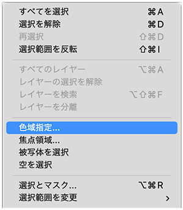
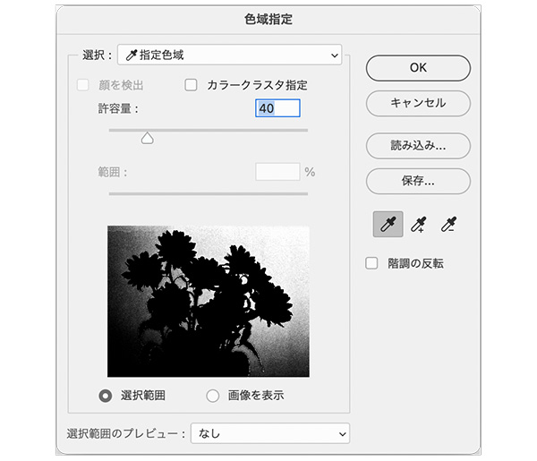
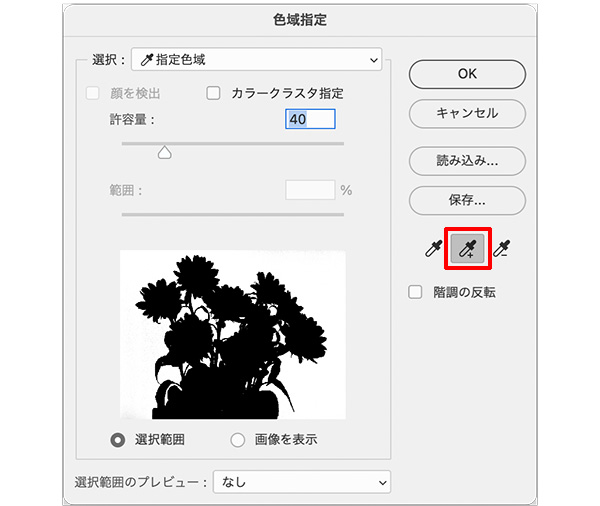
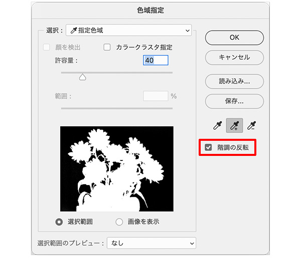
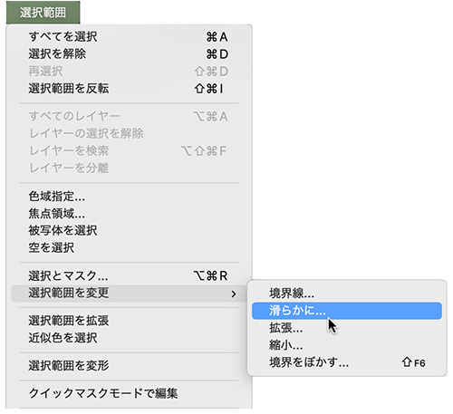
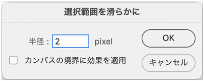
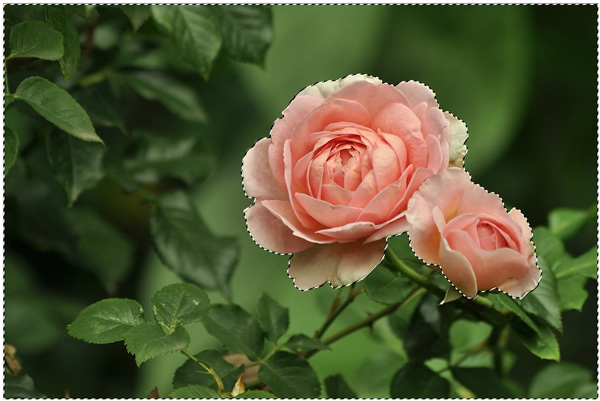
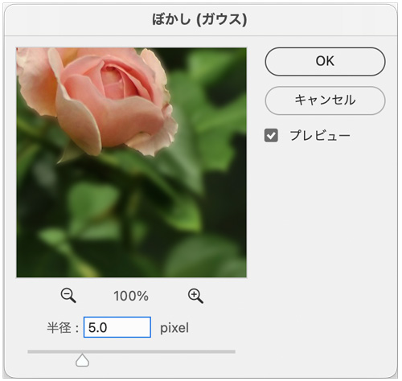

色域指定
- 既存の選択範囲または画像全体から、指定したカラーの範囲を選択する
- 「選択範囲」メニュー → 「色域指定」

- 選択しやすい色の部分をスポイトツールでクリック

- 続く範囲をスポイトツール+でクリック

- 「階調の反転」を選択し、選択したい範囲にする

選択範囲を滑らかに
- ギザギザした形の選択範囲の角を滑らかにする
- 「オブジェクト選択ツール」で、花の部分のみを選択する

- 「選択範囲」メニュー → 「選択範囲を変更」→「滑らかに」


- 「選択範囲」メニュー → 「選択範囲を反転」

- 反転した選択範囲を、「フィルター」→「ぼかし」→「ガウス」でぼかす
